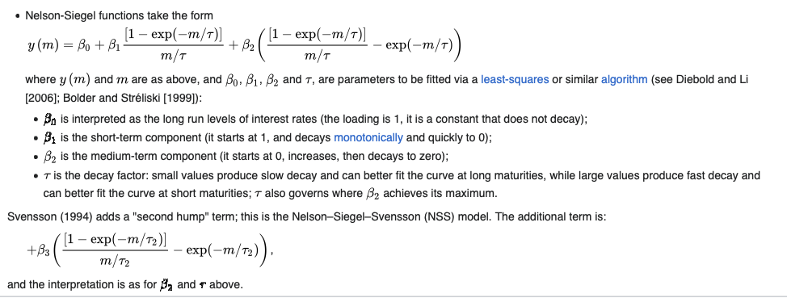
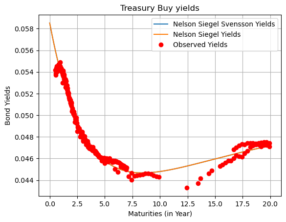

import numpy as np
import pandas as pdUS Treasuries
import os
from IPython.display import Image as Img
dir_data = '../data'
dir_assets = './assets'
def img_colab(img_path):
'''
Helper function returning an image to be displayed by Jupyter Notebook / IPython.display module.
Parameters
----------
path : path to image
The image should be in a child folder "./assets".
'''
display(Img(os.path.join(dir_assets, img_path)))
return NoneCode
# # Within Google Colab (uncomment below)
# # mount my Google Drive on the VM
# from google.colab import drive
# drive.mount('/gdrive')
# # You should have already created a 'teaching_Python' folder
# # within your Google Drive to persist code and data
# # the following code should then list the files in the data folder
# dir_python = '/gdrive/MyDrive/teaching_Python'
# dir_data = os.path.join(dir_python, 'data')
# os.listdir(dir_data)Sometimes you have to use a http POST request, for example when dealing with forms. For example on the FED TreasuryDirect website, in order to get a daily list of US Treasury prices, you first have to specificy a value date:
Code
img_colab('treasury_post_input.png')Inspecting a little bit the web page, we see that a POST request is launched together with date parameters:
Code
img_colab('treasury_post_finish.png')We can use requests package to submit a POST reauest with params:
treasury_post_url = 'https://www.treasurydirect.gov/GA-FI/FedInvest/selectSecurityPriceDate'import requests
from bs4 import BeautifulSoup
from urllib import parse
from io import StringIO
month = 9
day = 25
year = 2023
user_agent = {'User-Agent': 'Mozilla/5.0 (Windows NT 10.0; Win64; x64) AppleWebKit/537.36 (KHTML, like Gecko) Chrome/111.0.0.0 Safari/537.36'}
post_params = f'priceDate.month={month}&priceDate.day={day}&priceDate.year={year}&submit=Show+Prices'
r = requests.post(treasury_post_url, data=parse.parse_qs(post_params), headers=user_agent)
r<Response [200]>Reading the content of the response to pandas:
df_treasuries = pd.read_html(StringIO(str(BeautifulSoup(r.content))))[0]
df_treasuries.head(4)| CUSIP | SECURITY TYPE | RATE | MATURITY DATE | CALL DATE | BUY | SELL | END OF DAY | |
|---|---|---|---|---|---|---|---|---|
| 0 | 912797GU5 | MARKET BASED BILL | 0.000% | 09/26/2023 | NaN | 0.000000 | 99.985389 | 100.000000 |
| 1 | 912796CS6 | MARKET BASED BILL | 0.000% | 09/28/2023 | NaN | 0.000000 | 99.956167 | 99.970778 |
| 2 | 912797GV3 | MARKET BASED BILL | 0.000% | 10/03/2023 | NaN | 99.883111 | 99.882889 | 99.897528 |
| 3 | 912796YJ2 | MARKET BASED BILL | 0.000% | 10/05/2023 | NaN | 99.853750 | 99.853333 | 99.868000 |
Exercise example of data analysis
The aim of the exercise is to scrape US Treasury data from treasurydirect.gov website given a range of dates then perform some analytics.
- Using Python
datetimepackage and given a start and end dates write a function returning a list of business days (you don’t have to deal with business holidays in this function) within the range. The.weekday()method for datetime.date objects anddatetime.timedelta()will be useful.
Basic usage of datetime:
import datetime
start_date = datetime.date(2023, 9, 1)
end_date = datetime.date(2023, 9, 28)
another_date = '27/09/2023'
another_date = datetime.datetime.strptime(another_date, '%d/%m/%Y').date()
print(another_date.year)
print(another_date.day)
print(another_date.month)Then for each business day, get US treasury prices from
treasurydirect.govusing the post request that we have seen before. Store the results in a pandas DataFrame keeping the original columns CUSIP:END OF DAY but adding before a column VALUE DATE corresponding to the business day (you can use.insert(loc=0,..)). Then save this DataFrame to a .csv file in thedatafolder of your Classroom.The aim is now to be able to imply a yield from a US Treasury Note/Bond price and its characteristics (Coupon, Maturity). We decompose the problem in two steps:
first creating a function
price_bondthat given a pricing date, a maturity date, a coupon, a yield and assuming the coupon is paid bi-annualy returns the price of a bond. To simplify you can first start by assuming the pricing date is the issue date of the bond or a coupon date. Then handle any pricing dates.second given this function
price_bondand a bond priceP, “imply” the yield to maturity being the yield to input toprice_bondto retrieve the bond price. For that you will have to use a solver or an optimizer. Basically you want to find the yield solvingprice_bond(yield)-P= 0. For that you can implement from scratch for example a bisection method (see Wikipedia article here and also here for root finding methods with Python) or use thescipy.optimize.bisectorscipy.optimize.newton. Once finished put your program inside abond_ytmfunction.
Apply the
bond_ytmto your pandas DataFrame of US treasury prices, to get a bid/ask yield to maturity for each day/CUSIP where SECURITY TYPE is eitherMARKET BASED NOTEorMARKET BASED BOND.Plot for a given business day the yields of US Treasuries with respect to their maturity to get a first sense of the data
The ECB and many other central banks use the Nelson Siegel parametrization see here to estimate euro area government bond yield curves from government bonds market prices. The original motivation for this model was to create a parsimonious model of the interest rate curve that could capture the range of shapes generally seen in yield curves: monotonic form and with humps in various areas of the curve. The Nelson-Siegel yield function (1987) take the form:
\[ y(m) = \beta_0 + \beta_1 \frac{\left( 1 - \exp (- m / \tau) \right)}{m / \tau} + \beta_2 \left( \frac{\left( 1 - \exp (- m / \tau) \right)}{m / \tau} - \exp \left( - m / \tau \right) \right) \]
Svensson (1994) adds the additional term:
\[ + \beta_3 \left( \frac{\left( 1 - \exp (- m / \tau_2) \right)}{m / \tau_2} - \exp \left( - m / \tau_2 \right) \right) \]
First define a nss_yield and a ns_yield function allowing you to plot a Nelson Siegel (Svensson) yield curve given maturity and its parameters.
You can also plot each “factor” of the model to get a sense on the formula.
We will see how to fit the parameters using either the package nelson_siegel_svensson or scipy
Start of the exercise
- Using Python
datetimepackage and given a start and end dates write a function returning a list of business days (you don’t have to deal with business holidays in this function) within the range. The.weekday()method for datetime.date objects anddatetime.timedelta()will be useful.
import datetimestart_date = datetime.date(2023, 9, 14)
end_date = datetime.date(2023, 9, 29)
print(f'Date range: [{start_date}, {end_date}]')Date range: [2023-09-14, 2023-09-29]def generate_bizdays(start_date, end_date):
bizdays = []
curr_date = start_date
while curr_date <= end_date:
if curr_date.weekday() <= 4:
bizdays.append(curr_date)
curr_date = curr_date + datetime.timedelta(days=1)
return bizdays
bizdays = generate_bizdays(start_date, end_date)
bizdays[datetime.date(2023, 9, 14),
datetime.date(2023, 9, 15),
datetime.date(2023, 9, 18),
datetime.date(2023, 9, 19),
datetime.date(2023, 9, 20),
datetime.date(2023, 9, 21),
datetime.date(2023, 9, 22),
datetime.date(2023, 9, 25),
datetime.date(2023, 9, 26),
datetime.date(2023, 9, 27),
datetime.date(2023, 9, 28),
datetime.date(2023, 9, 29)]- Then for each business day, get US treasury prices from
treasurydirect.govusing the post request that we have seen before. Store the results in a pandas DataFrame keeping the original columns CUSIP:END OF DAY but adding before a column VALUE DATE corresponding to the business day (you can use.insert(loc=0,..)). Then save this DataFrame to a .csv file in thedatafolder of your Classroom.
def get_treasury_prices(bizdays):
dict_df_treasuries = {}
for date in bizdays:
print(date)
month = date.month
day = date.day
year = date.year
post_params = f'priceDate.month={month}&priceDate.day={day}&priceDate.year={year}&submit=Show+Prices'
r = requests.post(treasury_post_url, data=parse.parse_qs(post_params), headers=user_agent)
df_treasuries = pd.read_html(StringIO(str(BeautifulSoup(r.content))))[0]
df_treasuries['RATE'] = df_treasuries['RATE'].str.replace('%', '')
df_treasuries['RATE'] = pd.to_numeric(df_treasuries['RATE'], errors='coerce') / 100.0
df_treasuries['MATURITY DATE'] = pd.to_datetime(df_treasuries['MATURITY DATE'],
format='%m/%d/%Y',
errors='coerce')
df_treasuries.insert(loc=0, column='VALUE DATE', value = pd.to_datetime(date,
format='%Y-%m-%d'))
# Handle the case of empty data
if df_treasuries.empty:
dict_df_treasuries[date] = 'Isin not listed'
else:
dict_df_treasuries[date] = df_treasuries
return dict_df_treasuries
dict_df_treasuries = get_treasury_prices(bizdays)2023-09-14
2023-09-15
2023-09-18
2023-09-19
2023-09-20
2023-09-21
2023-09-22
2023-09-25
2023-09-26
2023-09-27
2023-09-28
2023-09-29df_treasuries_prices = pd.concat([v for _,v in dict_df_treasuries.items() if isinstance(v, pd.DataFrame)],
ignore_index=True)
print(df_treasuries_prices.dtypes)
df_treasuries_prices.head(4)VALUE DATE datetime64[ns]
CUSIP object
SECURITY TYPE object
RATE float64
MATURITY DATE datetime64[ns]
CALL DATE float64
BUY float64
SELL float64
END OF DAY float64
dtype: object| VALUE DATE | CUSIP | SECURITY TYPE | RATE | MATURITY DATE | CALL DATE | BUY | SELL | END OF DAY | |
|---|---|---|---|---|---|---|---|---|---|
| 0 | 2023-09-14 | 912797GT8 | MARKET BASED BILL | 0.0 | 2023-09-19 | NaN | 0.000000 | 99.926944 | 99.941333 |
| 1 | 2023-09-14 | 912796CR8 | MARKET BASED BILL | 0.0 | 2023-09-21 | NaN | 99.898111 | 99.897917 | 99.912500 |
| 2 | 2023-09-14 | 912797GU5 | MARKET BASED BILL | 0.0 | 2023-09-26 | NaN | 99.825167 | 99.824667 | 99.838972 |
| 3 | 2023-09-14 | 912796CS6 | MARKET BASED BILL | 0.0 | 2023-09-28 | NaN | 99.796417 | 99.795444 | 99.809333 |
df_treasuries_prices.tail(4)| VALUE DATE | CUSIP | SECURITY TYPE | RATE | MATURITY DATE | CALL DATE | BUY | SELL | END OF DAY | |
|---|---|---|---|---|---|---|---|---|---|
| 5305 | 2023-09-29 | 91282CFS5 | MARKET BASED FRN | 0.05620 | 2024-10-31 | NaN | 100.098973 | 100.077777 | 100.083075 |
| 5306 | 2023-09-29 | 91282CGF2 | MARKET BASED FRN | 0.05681 | 2025-01-31 | NaN | 100.154413 | 100.128462 | 100.131705 |
| 5307 | 2023-09-29 | 91282CGY1 | MARKET BASED FRN | 0.05649 | 2025-04-30 | NaN | 100.056931 | 100.039800 | 100.051218 |
| 5308 | 2023-09-29 | 91282CHS3 | MARKET BASED FRN | 0.05605 | 2025-07-31 | NaN | 99.921257 | 99.912499 | 99.916878 |
Saving to csv
df_treasuries_prices.to_csv(os.path.join(dir_data, 'df_treasuries_prices.csv'), index=False)The aim is now to be able to imply a yield from a US Treasury Note/Bond price and its characteristics (Coupon, Maturity). We decompose the problem in two steps:
- first creating a function
price_bondthat given a pricing date, a maturity date, a coupon, a yield and assuming the coupon is paid bi-annualy returns the price of a bond. To simplify you can first start by assuming the pricing date is the issue date of the bond or a coupon date. Then handle any pricing dates.
- first creating a function
To set these ideas on a simple example, let’s choose a specific Treasury Note, with CUSIP number 91282CDN8, maturing December 15, 2024, paying a 1% coupon semi-annually:
Code
img_colab('91282CDN8_issue.png')We define here the bond main characteristics:
clean_price = 94.984375
par_value = 100
pricing_date = '29/09/2023'
last_coupon = '15/06/2023'
next_coupon = '15/12/2023'
maturity_date = '15/12/2024'
issue_date = '15/12/2021'
coupon = 1.0
freq = 2We remind here the bond yield problem as stated in this ISMA publication:
Code
img_colab('yield_formula_I.png')We first start with a naive implementation, without caring too much about daycount conventions, ajustments etc:
def bond_price_naive(yld, pricing_date, maturity_date, coupon, redemption, frequency, verbose=False):
# We adapt the 'annual' coupon to the payment frequency
coupon = redemption * (coupon / 100 / frequency)
# We compute the time in years to maturity
L_n = (maturity_date - pricing_date).days / 365
# It is assumed a full interest period is always 1.0/frequency and the coupon is unadjusted
# We first build a list of cashflows times in years starting backward from maturity
time_to_future_cf = list(reversed([L_n-i/frequency for i in range(int(frequency * L_n) + 1)]))
# The dcf of coupons + redemption is known as Dirty Price (ie including accrued interests)
# It is the price you have to pay to settle a bond, but usually bonds are quoted
# with Clean Prices (Dirty Price - Accrued Interests)
# Variant where the yield is compounded with respect to bond frequency
# dirty_price = (sum([coupon/(1 + yld / frequency) ** (frequency * L_i) for L_i in time_to_future_cf])
# + redemption / (1 + yld / frequency) ** (frequency * L_n))
# Annual yield compounding as per ISMA
dirty_price = (sum([coupon/(1 + yld) ** L_i for L_i in time_to_future_cf])
+ redemption / (1 + yld) ** L_n)
# We then compute accrued interests
accrued_interest = (1/frequency - time_to_future_cf[0])*coupon*frequency
clean_price = dirty_price - accrued_interest
if verbose:
print(f'Clean price: {clean_price}')
print(f'Dirty price: {dirty_price}')
print(f'Accrued interest: {accrued_interest}')
print(f'Cashflow schedule: {time_to_future_cf}')
return clean_pricebond_price_naive(yld = 0.05391482199427463,
pricing_date = datetime.datetime.strptime(pricing_date, '%d/%m/%Y'),
maturity_date = datetime.datetime.strptime(maturity_date, '%d/%m/%Y'),
coupon = coupon,
redemption = 100,
frequency = freq,
verbose=True)Clean price: 94.98437500001599
Dirty price: 95.270676369879
Accrued interest: 0.2863013698630137
Cashflow schedule: [0.2136986301369863, 0.7136986301369863, 1.2136986301369863]94.98437500001599pricing_date = '29/09/2023'
maturity_date = '15/12/2024'
pricing_date = datetime.datetime.strptime(pricing_date, '%d/%m/%Y')
maturity_date = datetime.datetime.strptime(maturity_date, '%d/%m/%Y')
maturity_datedatetime.datetime(2024, 12, 15, 0, 0)L_n = (maturity_date - pricing_date).days / 365
L_n1.2136986301369863Using list comprehension to generate CF starting backward from maturity
[L_n-i/freq for i in range(int(freq * L_n) + 1)][1.2136986301369863, 0.7136986301369863, 0.2136986301369863]Then reversing the list to get chronological order, for example using Python built-in reversed function. See other ways here:
reversed_list_it = reversed([L_n-i/freq for i in range(int(freq * L_n) + 1)])
reversed_list_it<list_reverseiterator at 0x16853b970>Unfortunately, reversed produces an iterator and not a list:
for l in reversed_list_it:
print(l)reversed_list = list(reversed_list_it)
reversed_list[]reversed_list_it = reversed([L_n-i/freq for i in range(int(freq * L_n) + 1)])
reversed_list = list(reversed_list_it)
reversed_list[0.2136986301369863, 0.7136986301369863, 1.2136986301369863]We plot the Clean Price function with respect to yield, we briefly introduce here some NumPy objects;
np.linspace() allows to return evenly spaced numbers over a specified interval, which can be useful in the context of ploting a function.
np.vectorize() allows to return evenly spaced numbers over a specified interval, which can be useful in the context of ploting a function.
x = np.linspace(-0.01, 0.1, 150)
bond_price_naive_v = np.vectorize(bond_price_naive)
y = bond_price_naive_v(x,
pricing_date = datetime.datetime.strptime(pricing_date, '%d/%m/%Y'),
maturity_date = datetime.datetime.strptime(maturity_date, '%d/%m/%Y'),
coupon = coupon,
redemption = 100,
frequency = freq)
print(type(y))
y[::10]<class 'numpy.ndarray'>array([102.45178728, 101.53511035, 100.63331611, 99.74605617,
98.87299272, 98.01379818, 97.16815484, 96.33575444,
95.51629785, 94.70949476, 93.91506333, 93.13272987,
92.36222863, 91.60330141, 90.85569738])import matplotlib.pyplot as plt
import matplotlib.ticker as mtick
fig, ax = plt.subplots()
ax.plot(x, y)
ax.plot(x, clean_price * np.ones_like(x))
ax.set(xlabel='Yield', ylabel='Bond Clean Price',
title='Clean Price of 3 Year Note 91282CDN8 (15-Dec-2024) w.r.t. Yield')
ax.xaxis.set_major_formatter(mtick.PercentFormatter(xmax=1.0))
plt.show()We use scipy.optimize.newton() to equalize market price to bond price function at the yield to maturity:
import scipy.optimize as optimize
def bond_ytm_naive(clean_price, pricing_date, maturity_date, coupon, redemption, frequency, ytm_0):
# we define the function we want to solve wrt to yield (ie solve Price(yield) = Market price )
def equalize_price(yld):
CP = bond_price_naive(yld, pricing_date, maturity_date, coupon, redemption, frequency)
return CP - clean_price
ytm = optimize.newton(equalize_price, ytm_0)
bond_price_naive(ytm, pricing_date, maturity_date, coupon, redemption, frequency, verbose=True)
return ytmbond_ytm_naive(clean_price = clean_price,
pricing_date = datetime.datetime.strptime(pricing_date, '%d/%m/%Y'),
maturity_date = datetime.datetime.strptime(maturity_date, '%d/%m/%Y'),
coupon = coupon,
redemption = 100,
frequency = freq,
ytm_0 = 0.03)Clean price: 94.98437500001599
Dirty price: 95.270676369879
Accrued interest: 0.2863013698630137
Cashflow schedule: [0.2136986301369863, 0.7136986301369863, 1.2136986301369863]0.05391482199427463We start caring a little bit about daycounts and conventions, first defining a function that shift payments on week ends to Monday:
def adjust_business_day(a_datetime):
# wd = a_datetime.isoweekday()
# # if Satursday or Sunday
# if wd in set((6, 7)):
# # if Satursday or Sunday shift by either 2 or 1 day to Monday
# a_datetime += datetime.timedelta(days=8 - wd)
wd = a_datetime.weekday()
# if Satursday or Sunday
if wd in set((5, 6)):
# if Satursday or Sunday shift by either 2 or 1 day to Monday
a_datetime += datetime.timedelta(days=7 - wd)
return a_datetime
we_sun = datetime.date(2023, 10, 1)
we_sat = datetime.date(2023, 9, 30)
print(adjust_business_day(we_sat))
print(adjust_business_day(we_sun))2023-10-02
2023-10-02from dateutil.relativedelta import relativedelta
def bond_price_with_adjustments(yld, pricing_date, maturity_date, coupon, redemption, frequency, verbose=False):
# We compute the nominal coupon
coupon = redemption * coupon / 100
# We compute the time in years to maturity
L_n = (maturity_date - pricing_date).days / 365
# Defining a shift in months corresponding to bond frequency
months_shift = relativedelta(months=int(12 / frequency))
# We first build a list of cashflows dates starting backward from maturity
cf_schedule = list(reversed([maturity_date - i * months_shift
for i in range(freq*int(L_n)+2)]))
# Adjusting payment dates (ie cashflow dates) if weekend
cf_payment_dates = [(adjust_business_day(cf) - pricing_date).days/365 for cf in cf_schedule]
# We first build a list of cashflows times in years starting backward from maturity
time_to_future_cf = cf_payment_dates
# The interest calculation period are unadjusted, we use year fractions of
# exact interest dates over 365 to compute interests (Actual365Fixed convention)
# cf_period_fraction = [(cf - pricing_date).days/365 for cf in cf_schedule]
year_fraction = [(j-i).days/365 for i, j in zip(cf_schedule[:-1], cf_schedule[1:])]
# The dcf of coupons + redemption is known as Dirty Price (ie including accrued interests)
# It is the price you have to pay to settle a bond, but usually bonds are quoted
# with Clean Prices (Dirty Price - Accrued Interests)
# Variant where the yield is compounded with respect to bond frequency
# dcf = (sum([coupon * frequency * yf /(1 + yld / frequency) ** (frequency * l_i) for yf, l_i in zip(year_fraction , cf_payment_dates[1:])])
# + redemption / (1 + yld / frequency) ** (frequency * cf_payment_dates[-1]))
# Annual yield compounding as per ISMA
dirty_price = (sum([coupon * yf /(1 + yld) ** L_i for yf, L_i in zip(year_fraction , cf_payment_dates[1:])])
+ redemption / (1 + yld) ** cf_payment_dates[-1])
# We then compute accrued interests
accrued_interest = (pricing_date - cf_schedule[0]).days / 365 * coupon
clean_price = dirty_price - accrued_interest
if verbose:
print(f'Clean price: {clean_price}')
print(f'Dirty price: {dirty_price}')
print(f'Accrued interest: {accrued_interest}')
print(f'Cashflow schedule, time to mat: {time_to_future_cf}')
print(f'Cashflow schedule, dates: {cf_schedule}')
return clean_price
def bond_ytm_with_adjustments(clean_price, pricing_date, maturity_date, coupon, redemption, frequency, ytm_0):
# we define the function we want to solve wrt to yield (ie solve Price(yield) = Market price )
def equalize_price(yld):
CP = bond_price_with_adjustments(yld, pricing_date, maturity_date, coupon, redemption, frequency)
return CP - clean_price
ytm = optimize.newton(equalize_price, ytm_0)
bond_price_with_adjustments(ytm, pricing_date, maturity_date, coupon, redemption, frequency, verbose=True)
return ytmbond_ytm_with_adjustments(clean_price = clean_price,
pricing_date = datetime.datetime.strptime(pricing_date, '%d/%m/%Y'),
maturity_date = datetime.datetime.strptime(maturity_date, '%d/%m/%Y'),
coupon = coupon,
redemption = 100,
frequency = freq,
ytm_0 = 0.03)Clean price: 94.98437500001552
Dirty price: 95.27478595891962
Accrued interest: 0.29041095890410956
Cashflow schedule, time to mat: [-0.29041095890410956, 0.21095890410958903, 0.7178082191780822, 1.2164383561643837]
Cashflow schedule, dates: [datetime.datetime(2023, 6, 15, 0, 0), datetime.datetime(2023, 12, 15, 0, 0), datetime.datetime(2024, 6, 15, 0, 0), datetime.datetime(2024, 12, 15, 0, 0)]0.05378899594106901We present here an alternative implementation matching the Excel/Open Office/Google Sheets PRICE/YIELD formulas:
The source code for the Open Office version is available here. The approach is interesting in that only the first coupon / accrued interest follows market conventions, subsequent payments are supposed to be regular (ie 1 / frequency) allowing a simple implementation (sum of geometric series).
Below the code source for Open Office Price and Yield functions:
Code
img_colab('libre_office_get_price.png')
img_colab('libre_office_get_yield.png')We note that a binary search or bisection is used to “solve’ the yield.
Microsoft offers a light documentation of its PRICE formula for Excel, we will use the same terminology in our Python function (redemption, A, E, DSC/E):
Code
img_colab('price_excel_1.png')
img_colab('price_excel_2.png')
img_colab('price_excel_3.png')def bond_clean_price_excel(bond_yield, pricing_date, maturity_date, coupon, redemption, frequency, verbose=False):
months_shift = relativedelta(months=int(12 / frequency))
coupon = coupon / 100 / frequency * redemption
# we need a number n of coupon paid to apply the formula
# we start with a rough estimate
n = int(frequency * (maturity_date - pricing_date).days / 365)
# we check the estimate of number of coupon and adjust if needed
while(maturity_date - n * months_shift <= pricing_date):
n = n-1
next_coupon = maturity_date - n * months_shift
last_coupon = next_coupon - months_shift
# DSC = number of days from settlement to next coupon date.
dsc = (next_coupon - pricing_date).days
# E = number of days in coupon period in which the settlement date falls.
e = (next_coupon - last_coupon).days
dsc_e = dsc / e
accrual_fraction = 1 - dsc_e
# A = number of days from beginning of coupon period to settlement date.
a = (pricing_date - last_coupon).days
# we neglect leap years and business days adjustments
# we use the annuity formula for bond PV(coupons, yield) = coupon / yield * (1 - 1 / (1 + y) ** n) using the sum of geometric series
# we need a number n of full interest periods to apply the formula
coupons_num = n + 1
# so we first compute PV(yield, as of previous coupon date)
bond_annuity = 0
if bond_yield == 0:
bond_annuity = coupon * coupons_num
else:
# Using Sum_i=0..n (coupon * 1 / (1 + bond_yield/frequency) ** (i + dsc_e))
# = coupon *
bond_annuity = coupon * 1 / (bond_yield/frequency) * (1 - 1 / (1 + bond_yield/frequency) ** coupons_num)
# Direct implementation of Excel formula, it is quicker to use the sum of geometric series formula below
# for i in range(coupons_num):
# dcf = coupon * 1 / (1 + bond_yield/frequency) ** (i + dsc_e)
# print(f'cf{i}: {dcf}')
# bond_annuity = bond_annuity + dcf
# bond_pv = bond_annuity + redemption * 1 / (1 + bond_yield/frequency) ** (coupons_num - 1 + dsc_e)
# we add redemption
bond_pv_last_coupon = bond_annuity + redemption * 1 / (1 + bond_yield/frequency) ** coupons_num
# and get PV(yield, as of pricing date) by calculating FV(PV(as of previous coupon date), as of pricing date)
bond_pv = (1 + bond_yield/freq) ** accrual_fraction * bond_pv_last_coupon
accrued_interest = accrual_fraction * coupon
clean_price = bond_pv - accrued_interest
if verbose:
print(f'Clean price: {clean_price}')
print(f'Dirty price: {bond_pv}')
print(f'Accrued interest: {accrued_interest}')
print(f'Last coupon date: {last_coupon}')
print(f'Next coupon date: {next_coupon}')
print(f'A: {a}')
print(f'E: {e}')
print(f'DSC_E: {dsc_e}')
print(f'Accrual fraction: {accrual_fraction}')
print(f'Num coupon: {coupons_num}')
return bond_pv - accrued_interest
def bond_ytm_excel(clean_price, pricing_date, maturity_date, coupon, redemption, frequency, ytm_0, method = "newton"):
ytm_func = lambda y: bond_clean_price_excel(y, pricing_date, maturity_date, coupon, redemption, frequency) - clean_price
if method == "newton":
return optimize.newton(ytm_func, ytm_0)
else:
return optimize.bisect(ytm_func, -ytm_0, 5*ytm_0)bond_clean_price_excel(0.0533260086420741,
datetime.datetime.strptime(pricing_date, '%d/%m/%Y'),
datetime.datetime.strptime(maturity_date, '%d/%m/%Y'),
coupon,
100,
freq,
verbose=True)Clean price: 94.98437499999991
Dirty price: 95.27399248633871
Accrued interest: 0.2896174863387978
Last coupon date: 2023-06-15 00:00:00
Next coupon date: 2023-12-15 00:00:00
A: 106
E: 183
DSC_E: 0.4207650273224044
Accrual fraction: 0.5792349726775956
Num coupon: 394.98437499999991bond_ytm_excel(clean_price,
datetime.datetime.strptime(pricing_date, '%d/%m/%Y'),
datetime.datetime.strptime(maturity_date, '%d/%m/%Y'),
coupon,
100,
freq,
0.03)0.053326008642049956bond_ytm_excel(clean_price,
datetime.datetime.strptime(pricing_date, '%d/%m/%Y'),
datetime.datetime.strptime(maturity_date, '%d/%m/%Y'),
coupon,
100,
freq,
0.03,
"bisect")
0.05332600864101551We have briefly verified our Excel like implementation using a Google Sheet. First using PRICE/YIELD formulas. Then step by step computing the PRICE formula (mimicking OpenOffice source code) followed by a solver to obtain the yield:
Code
img_colab('bond_yield_excel.png')We also verify our simple implementation with adjustments using Quantlib a free/open-source library for quantitative finance allowing real life setting of bond pricing conventions:
import QuantLib as ql
valuationDate = ql.Date(29, 9, 2023)
ql.Settings.instance().evaluationDate = valuationDate
start = ql.Date(15, 12, 2021)
maturity = ql.Date(15, 12, 2024)
# day_count = ql.ActualActual(ql.ActualActual.ISDA)
# day_count = ql.ActualActual(ql.ActualActual.ISMA) # equivalent to current ICMA daycount
# day_count = ql.ActualActual(ql.ActualActual.AFB)
# day_count = ql.ActualActual(ql.ActualActual.Bond)
# day_count = ql.ActualActual(ql.ActualActual.Actual365)
day_count = ql.Actual365Fixed()
bond = ql.FixedRateBond(0, ql.TARGET(), 100, start, maturity, ql.Period('6M'), [0.01], day_count, ql.Unadjusted)
bond_yield = bond.bondYield(clean_price, day_count, ql.Compounded, ql.Annual, valuationDate)
print(bond_yield)
print(bond.accruedAmount())0.05378899437976785
0.2904109589041193valuationDate = ql.Date(29, 9, 2023)
ql.Settings.instance().evaluationDate = valuationDate
# day_count = ql.ActualActual(ql.ActualActual.ISDA)
# day_count = ql.ActualActual(ql.ActualActual.AFB)
# day_count = ql.ActualActual(ql.ActualActual.Bond)
# day_count = ql.ActualActual(ql.ActualActual.Actual365)
# day_count = ql.ActualActual(ql.ActualActual.ISMA) # equivalent to the ICMA daycount
day_count = ql.Actual365Fixed()
# interpolation = ql.Linear()
compounding = ql.Compounded
compounding_frequency = ql.Semiannual
issue_date = ql.Date(15, 12, 2021)
maturity = ql.Date(15, 12, 2024)
tenor = ql.Period(ql.Semiannual)
calendar = ql.TARGET()
business_convention = ql.Unadjusted
# business_convention_terminal = ql.ModifiedFollowing
business_convention_terminal = ql.Unadjusted
date_generation = ql.DateGeneration.Backward
month_end = False
schedule = ql.Schedule(issue_date, maturity, tenor,
calendar, business_convention,
business_convention_terminal, date_generation,
month_end)
print(list(schedule))
coupon_rate = .01
coupons = [coupon_rate]
settlement_days = 0
face_value = 100
bond = ql.FixedRateBond(settlement_days,
face_value,
schedule,
coupons,
day_count)[Date(15,12,2021), Date(15,6,2022), Date(15,12,2022), Date(15,6,2023), Date(15,12,2023), Date(15,6,2024), Date(15,12,2024)]Computing bond yield for the fixed rate note:
help(bond.bondYield)Help on method bondYield in module QuantLib.QuantLib:
bondYield(*args) method of QuantLib.QuantLib.FixedRateBond instance
bondYield(Bond self, DayCounter dc, Compounding compounding, Frequency freq, Real accuracy=1.0e-8, Size maxEvaluations=100) -> Real
bondYield(Bond self, Real cleanPrice, DayCounter dc, Compounding compounding, Frequency freq, Date settlement=Date(), Real accuracy=1.0e-8, Size maxEvaluations=100) -> Real
bond_yield = bond.bondYield(clean_price, day_count, ql.Compounded, ql.Annual, valuationDate)
bond_yield0.05378899437976785Printing nicely QuantLib cashflows to compare with our implementation and Excel:
data = []
for i, c in enumerate(bond.cashflows()[:-1]):
c = ql.as_coupon(c)
d1 = c.accrualStartDate()
d2 = c.accrualEndDate()
d = c.date()
CF = c.amount()
yf = day_count.yearFraction(valuationDate, d)
Disc = 1 / (1 + bond_yield) ** yf if d > ql.Date(29, 9, 2023) else 1.0
CF_discounted = CF * Disc if d > ql.Date(29, 9, 2023) else 0.0
data.append((d1, d2 ,d ,CF ,yf ,Disc ,CF_discounted))
data.append((d1, d2, bond.cashflows()[-1].date(), 100, yf, Disc, 100*Disc))
data = pd.DataFrame(data,
columns = ('Start date', 'End date', 'Payment date', 'CF', 'Year fraction', 'Discount', 'CF (disc.)'),
index = ['']*len(data))
print(f"Daycount basis: {day_count}")
print(f"DCF/Dirty price: {sum(data['CF (disc.)'])}")
print(f"YTM - Annual: {bond_yield}")
print("Cashflows:")
dataDaycount basis: Actual/365 (Fixed) day counter
DCF/Dirty price: 95.2747861295364
YTM - Annual: 0.05378899437976785
Cashflows:| Start date | End date | Payment date | CF | Year fraction | Discount | CF (disc.) | |
|---|---|---|---|---|---|---|---|
| December 15th, 2021 | June 15th, 2022 | June 15th, 2022 | 0.49863 | -1.290411 | 1.000000 | 0.000000 | |
| June 15th, 2022 | December 15th, 2022 | December 15th, 2022 | 0.50137 | -0.789041 | 1.000000 | 0.000000 | |
| December 15th, 2022 | June 15th, 2023 | June 15th, 2023 | 0.49863 | -0.290411 | 1.000000 | 0.000000 | |
| June 15th, 2023 | December 15th, 2023 | December 15th, 2023 | 0.50137 | 0.210959 | 0.989008 | 0.495859 | |
| December 15th, 2023 | June 15th, 2024 | June 17th, 2024 | 0.50137 | 0.717808 | 0.963091 | 0.482865 | |
| June 15th, 2024 | December 15th, 2024 | December 16th, 2024 | 0.50137 | 1.216438 | 0.938256 | 0.470414 | |
| June 15th, 2024 | December 15th, 2024 | December 16th, 2024 | 100.00000 | 1.216438 | 0.938256 | 93.825649 |
Code
img_colab('bond_yield_quantlib.png')# We reuse obtained yield to maturity to check bond attributes with QuantLib pricer
# we build a flat curve using this yield
spot_curve = ql.FlatForward(ql.Date(29, 9, 2023),
ql.QuoteHandle(ql.SimpleQuote(bond_yield)),
day_count,
compounding,
ql.Annual)
spot_curve_handle = ql.YieldTermStructureHandle(spot_curve)bond_engine = ql.DiscountingBondEngine(spot_curve_handle)
bond.setPricingEngine(bond_engine)print(f'settle date: {bond.settlementDate()}')
print(f'NPV: {bond.NPV()}')
print(f'Clean Price: {bond.cleanPrice()}')
print(f'Accrued Amount: {bond.accruedAmount()}')
print(f'Dirty Price: {bond.dirtyPrice()}')
compounding_frequency = ql.Semiannual
print(f'''YTM - Semiannual: {bond.bondYield(day_count,
compounding,
compounding_frequency)}''')
compounding_frequency = ql.Annual
print(f'''YTM - Annual: {bond.bondYield(day_count,
compounding,
compounding_frequency)}''')settle date: September 29th, 2023
NPV: 95.2747861295364
Clean Price: 94.98437517063226
Accrued Amount: 0.2904109589041193
Dirty Price: 95.27478612953638
YTM - Semiannual: 0.053084497451782224
YTM - Annual: 0.053788992781693884As an alternative to scipy.optimize.bisect or scipy.optimize.newton, we propose here to implement ourselves three different solvers as suggested in the exercise:
First using the bisection method as described in the Wikipedia article here (see also here):
Code
# source https://github.com/better/irr
img_colab('bisect.gif')<IPython.core.display.Image object>def solve_root_bisection(func, a, b, tol = 1e-8, n_iter = 200, verbose = False):
'''Find an approximate root of f(x)=0 on interval [a,b] using bisection/dichotomy.
Parameters
----------
func : function
The function for which we are trying to approximate a solution f(x)=0.
a,b : float
The interval in which to search for a solution. The function returns
None if f(a)*f(b) >= 0 since a solution is not guaranteed.
tol: float
The function stops when it finds m = (a_k + b_k) / 2 such that |f(m)| < tol
n_iter : integer
Or the number of iterations is reached.
verbose : boolean
If True print intermediate values at each iteration.
Returns
-------
m : number
The midpoint of the nth interval computed by the bisection method. The
initial interval [a_0,b_0] is [a,b]. If f(m) == 0 for some
midpoint m = (a_n + b_n)/2, then the function returns this solution.
If all signs of values f(a_n), f(b_n) and f(m_n) are the same at any
iteration, the bisection method fails and return None.
Example
--------
>>> f = lambda x: (x - 1)*(x + 3)
>>> solve_root_bissection(f,0,10)
1.0000000009313226
>>> f = lambda x: x ** 2 - 2
>>> sqrt_2 = solve_root_bissection(f, 1, 2)
>>> sqrt_2
1.4142135605216026
>>> import math
>>> abs(sqrt_2 - math.sqrt(2)) < 1e-8
TRUE
'''
n = 0
# check if a and b are lower/upper bounds of a root
if func(a)*func(b) > 0:
print("no root within [a, b], change [a, b]")
return None
else:
# bissect interval
m = (a + b) / 2
if verbose: print(f"m: {m}")
check = func(m)
if verbose: print(f"f(m): {check}")
# stopping condition |f(m)| < tol
while abs(check) >= tol:
n += 1
if(n > n_iter):
print(f"no root found within tolerance {tol} after {n_iter} iterations")
return None
# case where midpoint improves lower bound
elif check * func(a) > 0:
if verbose:
print(n, "pos")
print(f'a: {m} - root - b:{b}')
a = m
m = (a + b) / 2
# case where midpoint improves upper bound
else:
if verbose:
print(n, "neg")
print(f'a: {a} - root - b:{m}')
b = m
m = (a + b) / 2
if verbose: print(f"m: {m}")
check = func(m)
if verbose: print(f"f(m): {check}")
print(f"root found within tolerance {tol} at iteration {n}")
return mThen using the Secant method (which we already used using scipy.optimize.newton as we didn’t pass a derivative function to the optimizer):
def solve_root_secant(func, x0, x1, tol = 1e-8, n_iter = 200, verbose = False):
'''Find an approximate root of f(x)=0 using secant method with starting points x0, x1.
Parameters
----------
func : function
The function for which we are trying to approximate a solution f(x)=0.
x0,x1 : float
Two initial values to initiate the recurrence relation, should be 'close enough' to the root
https://en.wikipedia.org/wiki/Secant_method
xn = xn-1 - f(xn-1)*(xn-2 - xn-1)/(f(xn-1) - f(xn-2))
tol: float
The function stops when it finds xn such that |f(xn)| < tol
n_iter : integer
Or the number of iterations is reached.
verbose : boolean
If True print intermediate values at each iteration.
Returns
-------
xn : float
xn such that |f(xn)| < tol
In case the secant method fails to converge it returns None.
Example
--------
>>> f = lambda x: (x - 1)*(x + 3)
>>> solve_root_secant(f,0,1,10)
0.9999999988888671
>>> f = lambda x: x ** 2 - 2
>>> sqrt_2 = solve_root_secant(f, 1, 2)
>>> sqrt_2
1.4142135620573204
>>> import math
>>> abs(sqrt_2 - math.sqrt(2)) < 1e-8
TRUE
'''
if abs(func(x0)) < tol:
print(f"root found within tolerance {tol} at iteration {0}")
return x0
elif abs(func(x1)) < tol:
print(f"root found within tolerance {tol} at iteration {1}")
return x1
# Initialize recurrence relation
xn_minus_1 = x1
xn_minus_2 = x0
# Update reccurence until stopping condition |f(xn)| < tol is met
for i in range(2, n_iter):
xn = xn_minus_1 - func(xn_minus_1) * (xn_minus_1 - xn_minus_2) / (func(xn_minus_1) - func(xn_minus_2))
check = func(xn)
if verbose: print(f"Step {i}: xn-2: {xn_minus_2}, xn-1: {xn_minus_1}, xn: {xn}, f(xn): {check}")
if abs(check) < tol:
print(f"root found within tolerance {tol} at iteration {i}")
return xn
xn_minus_2 = xn_minus_1
xn_minus_1 = xn
print(f"no root found within tolerance {tol} after {n_iter} iterations")
return NoneAnd to finish using the Newton method:
Code
img_colab('newton.gif')
img_colab('newton_method.png')<IPython.core.display.Image object>def solve_root_newton(func, deriv, x0, tol = 1e-8, n_iter = 200, verbose = False):
'''Find an approximate root of f(x)=0 using secant method with starting points x0, x1.
Parameters
----------
func : function
The function for which we are trying to approximate a solution f(x)=0.
deriv : function
The derivative of the function for which we are trying to approximate a solution f(x)=0.
x0: float
Initial guess for the root
https://en.wikipedia.org/wiki/Newton%27s_method
xn+1 = xn - f(xn)/f'(xn)
tol: float
The function stops when it finds xn such that |f(xn)| < tol
n_iter : integer
Or the number of iterations is reached.
verbose : boolean
If True print intermediate values at each iteration.
Returns
-------
xn : float
xn such that |f(xn)| < tol
In case the newton method fails to converge it returns None.
Example
--------
>>> f = lambda x: (x - 1)*(x + 3)
>>> df = lambda x: 2 * (x + 1)
>>> solve_root_newton(f, df, 0)
1.0000000000000022
>>> f = lambda x: x ** 2 - 2
>>> df = lambda x: 2 * x
>>> sqrt_2 = solve_root_newton(f, df, 1)
>>> sqrt_2
1.4142135623746899
>>> import math
>>> abs(sqrt_2 - math.sqrt(2)) < 1e-8
TRUE
'''
if abs(func(x0)) < tol:
print(f"root found within tolerance {tol} at iteration {0}")
return x0
# Initialize recurrence relation
xn = x0
# Update reccurence until stopping condition |f(xn)| < tol is met
for i in range(1, n_iter):
if deriv == 0.0:
print(f"Newton method fails, derivative is nul at {xn} for initial guess {x0}, try another initial guess")
return None
else:
xn_plus_1 = xn - func(xn) / deriv(xn)
check = func(xn_plus_1)
if verbose: print(f"Step {i}: xn: {xn}, xn+1: {xn_plus_1}, f(xn+1): {check}")
if abs(check) < tol:
print(f"root found within tolerance {tol} at iteration {i}")
return xn_plus_1
xn = xn_plus_1
print(f"no root found within tolerance {tol} after {n_iter} iterations")
return NoneChecking our functions to compute sqrt(2) as a solution to x ** 2 - 2 = 0 on [1, 2]:
# defining equation to solve
f = lambda x: x ** 2 - 2
print('------------------ bisection method ------------------')
sqrt_2 = solve_root_bisection(f, 1, 2, 1e-8, 200, True)
print(sqrt_2)------------------ bisection method ------------------
m: 1.5
f(m): 0.25
1 neg
a: 1 - root - b:1.5
m: 1.25
f(m): -0.4375
2 pos
a: 1.25 - root - b:1.5
m: 1.375
f(m): -0.109375
3 pos
a: 1.375 - root - b:1.5
m: 1.4375
f(m): 0.06640625
4 neg
a: 1.375 - root - b:1.4375
m: 1.40625
f(m): -0.0224609375
5 pos
a: 1.40625 - root - b:1.4375
m: 1.421875
f(m): 0.021728515625
6 neg
a: 1.40625 - root - b:1.421875
m: 1.4140625
f(m): -0.00042724609375
7 pos
a: 1.4140625 - root - b:1.421875
m: 1.41796875
f(m): 0.0106353759765625
8 neg
a: 1.4140625 - root - b:1.41796875
m: 1.416015625
f(m): 0.005100250244140625
9 neg
a: 1.4140625 - root - b:1.416015625
m: 1.4150390625
f(m): 0.0023355484008789062
10 neg
a: 1.4140625 - root - b:1.4150390625
m: 1.41455078125
f(m): 0.0009539127349853516
11 neg
a: 1.4140625 - root - b:1.41455078125
m: 1.414306640625
f(m): 0.0002632737159729004
12 neg
a: 1.4140625 - root - b:1.414306640625
m: 1.4141845703125
f(m): -8.200109004974365e-05
13 pos
a: 1.4141845703125 - root - b:1.414306640625
m: 1.41424560546875
f(m): 9.063258767127991e-05
14 neg
a: 1.4141845703125 - root - b:1.41424560546875
m: 1.414215087890625
f(m): 4.314817488193512e-06
15 neg
a: 1.4141845703125 - root - b:1.414215087890625
m: 1.4141998291015625
f(m): -3.8843369111418724e-05
16 pos
a: 1.4141998291015625 - root - b:1.414215087890625
m: 1.4142074584960938
f(m): -1.726433401927352e-05
17 pos
a: 1.4142074584960938 - root - b:1.414215087890625
m: 1.4142112731933594
f(m): -6.474772817455232e-06
18 pos
a: 1.4142112731933594 - root - b:1.414215087890625
m: 1.4142131805419922
f(m): -1.0799813026096672e-06
19 pos
a: 1.4142131805419922 - root - b:1.414215087890625
m: 1.4142141342163086
f(m): 1.6174171832972206e-06
20 neg
a: 1.4142131805419922 - root - b:1.4142141342163086
m: 1.4142136573791504
f(m): 2.687177129701013e-07
21 neg
a: 1.4142131805419922 - root - b:1.4142136573791504
m: 1.4142134189605713
f(m): -4.056318516632018e-07
22 pos
a: 1.4142134189605713 - root - b:1.4142136573791504
m: 1.4142135381698608
f(m): -6.845708355740499e-08
23 pos
a: 1.4142135381698608 - root - b:1.4142136573791504
m: 1.4142135977745056
f(m): 1.0013031115363447e-07
24 neg
a: 1.4142135381698608 - root - b:1.4142135977745056
m: 1.4142135679721832
f(m): 1.583661290993632e-08
25 neg
a: 1.4142135381698608 - root - b:1.4142135679721832
m: 1.414213553071022
f(m): -2.6310235545778937e-08
26 pos
a: 1.414213553071022 - root - b:1.4142135679721832
m: 1.4142135605216026
f(m): -5.236811428943611e-09
root found within tolerance 1e-08 at iteration 26
1.4142135605216026print('------------------ secant method ------------------')
print(solve_root_secant(f, 1, 2, 1e-8, 200, True))------------------ secant method ------------------
Step 2: xn-2: 1, xn-1: 2, xn: 1.3333333333333335, f(xn): -0.22222222222222188
Step 3: xn-2: 2, xn-1: 1.3333333333333335, xn: 1.4000000000000001, f(xn): -0.03999999999999959
Step 4: xn-2: 1.3333333333333335, xn-1: 1.4000000000000001, xn: 1.4146341463414633, f(xn): 0.0011897679952408424
Step 5: xn-2: 1.4000000000000001, xn-1: 1.4146341463414633, xn: 1.41421143847487, f(xn): -6.007286838860537e-06
Step 6: xn-2: 1.4146341463414633, xn-1: 1.41421143847487, xn: 1.4142135620573204, f(xn): -8.931455575122982e-10
root found within tolerance 1e-08 at iteration 6
1.4142135620573204print('------------------ newton method ------------------')
# defining derivative
df = lambda x: 2 * x
print(solve_root_newton(f, df, 1, 1e-8, 200, True))
import math
abs(sqrt_2 - math.sqrt(2)) < 1e-8------------------ newton method ------------------
Step 1: xn: 1, xn+1: 1.5, f(xn+1): 0.25
Step 2: xn: 1.5, xn+1: 1.4166666666666667, f(xn+1): 0.006944444444444642
Step 3: xn: 1.4166666666666667, xn+1: 1.4142156862745099, f(xn+1): 6.007304882871267e-06
Step 4: xn: 1.4142156862745099, xn+1: 1.4142135623746899, f(xn+1): 4.510614104447086e-12
root found within tolerance 1e-08 at iteration 4
1.4142135623746899True- Apply the
yield_from_priceto your pandas DataFrame of US treasury prices, to get a bid/ask yield to maturity for each day/CUSIP where SECURITY TYPE is eitherMARKET BASED NOTEorMARKET BASED BOND.
mask = df_treasuries_prices['SECURITY TYPE'].isin(['MARKET BASED NOTE', 'MARKET BASED BOND'])
df_treasuries_bonds = (df_treasuries_prices[mask].
rename(
columns={
'VALUE DATE': 'VALUE_DATE',
'MATURITY DATE': 'MATURITY_DATE'
}
))
df_treasuries_bonds['RATE'] *= 100
df_treasuries_bonds.head(4)| VALUE_DATE | CUSIP | SECURITY TYPE | RATE | MATURITY_DATE | CALL DATE | BUY | SELL | END OF DAY | |
|---|---|---|---|---|---|---|---|---|---|
| 50 | 2023-09-14 | 91282CAK7 | MARKET BASED NOTE | 0.125 | 2023-09-15 | NaN | 0.0 | 99.96875 | 100.00000 |
| 51 | 2023-09-14 | 9128285D8 | MARKET BASED NOTE | 2.875 | 2023-09-30 | NaN | 0.0 | 99.87500 | 99.87500 |
| 52 | 2023-09-14 | 912828T26 | MARKET BASED NOTE | 1.375 | 2023-09-30 | NaN | 0.0 | 99.81250 | 99.78125 |
| 53 | 2023-09-14 | 91282CDA6 | MARKET BASED NOTE | 0.250 | 2023-09-30 | NaN | 0.0 | 99.75000 | 99.75000 |
for row in df_treasuries_bonds.head(3).itertuples():
print(row)Pandas(Index=50, VALUE_DATE=Timestamp('2023-09-14 00:00:00'), CUSIP='91282CAK7', _3='MARKET BASED NOTE', RATE=0.125, MATURITY_DATE=Timestamp('2023-09-15 00:00:00'), _6=nan, BUY=0.0, SELL=99.96875, _9=100.0)
Pandas(Index=51, VALUE_DATE=Timestamp('2023-09-14 00:00:00'), CUSIP='9128285D8', _3='MARKET BASED NOTE', RATE=2.875, MATURITY_DATE=Timestamp('2023-09-30 00:00:00'), _6=nan, BUY=0.0, SELL=99.875, _9=99.875)
Pandas(Index=52, VALUE_DATE=Timestamp('2023-09-14 00:00:00'), CUSIP='912828T26', _3='MARKET BASED NOTE', RATE=1.375, MATURITY_DATE=Timestamp('2023-09-30 00:00:00'), _6=nan, BUY=0.0, SELL=99.8125, _9=99.78125)bond_ytm_excel(clean_price,
datetime.datetime.strptime(pricing_date, '%d/%m/%Y'),
datetime.datetime.strptime(maturity_date, '%d/%m/%Y'),
coupon,
100,
freq,
0.03)0.053326008642049956Applying a complex function (not straightforward to ‘vectorize’)
Using pandas itertuples (ie iterating on rows, then working with tuples)
def itertuples_bond_yld(df):
return pd.Series(
bond_ytm_excel(
row.SELL, row.VALUE_DATE, row.MATURITY_DATE, row.RATE, 100.0, 2, 0.03)
for row in df.itertuples()
)%timeit itertuples_bond_yld(df_treasuries_bonds)1.03 s ± 18.8 ms per loop (mean ± std. dev. of 7 runs, 1 loop each)df_treasuries_bonds.dtypesVALUE_DATE datetime64[ns]
CUSIP object
SECURITY TYPE object
RATE float64
MATURITY_DATE datetime64[ns]
CALL DATE float64
BUY float64
SELL float64
END OF DAY float64
dtype: objectdf_treasuries_bonds.loc[4000:,'SELL_YTM'] = itertuples_bond_yld(df_treasuries_bonds.loc[4000:,:])
df_treasuries_bonds| VALUE_DATE | CUSIP | SECURITY TYPE | RATE | MATURITY_DATE | CALL DATE | BUY | SELL | END OF DAY | SELL_YTM | |
|---|---|---|---|---|---|---|---|---|---|---|
| 50 | 2023-09-14 | 91282CAK7 | MARKET BASED NOTE | 0.125 | 2023-09-15 | NaN | 0.000000 | 99.96875 | 100.00000 | NaN |
| 51 | 2023-09-14 | 9128285D8 | MARKET BASED NOTE | 2.875 | 2023-09-30 | NaN | 0.000000 | 99.87500 | 99.87500 | NaN |
| 52 | 2023-09-14 | 912828T26 | MARKET BASED NOTE | 1.375 | 2023-09-30 | NaN | 0.000000 | 99.81250 | 99.78125 | NaN |
| 53 | 2023-09-14 | 91282CDA6 | MARKET BASED NOTE | 0.250 | 2023-09-30 | NaN | 0.000000 | 99.75000 | 99.75000 | NaN |
| 54 | 2023-09-14 | 91282CAP6 | MARKET BASED NOTE | 0.125 | 2023-10-15 | NaN | 0.000000 | 99.53125 | 99.53125 | NaN |
| ... | ... | ... | ... | ... | ... | ... | ... | ... | ... | ... |
| 5245 | 2023-09-29 | 912810TJ7 | MARKET BASED BOND | 3.000 | 2052-08-15 | NaN | 73.109375 | 73.06250 | 72.53125 | NaN |
| 5246 | 2023-09-29 | 912810TL2 | MARKET BASED BOND | 4.000 | 2052-11-15 | NaN | 88.921875 | 88.87500 | 88.28125 | NaN |
| 5247 | 2023-09-29 | 912810TN8 | MARKET BASED BOND | 3.625 | 2053-02-15 | NaN | 82.968750 | 82.93750 | 82.37500 | NaN |
| 5248 | 2023-09-29 | 912810TR9 | MARKET BASED BOND | 3.625 | 2053-05-15 | NaN | 83.062500 | 83.03125 | 82.43750 | NaN |
| 5249 | 2023-09-29 | 912810TT5 | MARKET BASED BOND | 4.125 | 2053-08-15 | NaN | 91.046875 | 91.03125 | 90.40625 | NaN |
4008 rows × 10 columns
val = df_treasuries_bonds.at[5248,'VALUE_DATE']
mat = df_treasuries_bonds.at[5248,'MATURITY_DATE']
rate = df_treasuries_bonds.at[5248,'RATE']
sell = df_treasuries_bonds.at[5248,'SELL']
bond_ytm_excel(sell, val, mat, rate, 100, 2, 0.03)0.04690496896140147df_treasuries_bonds['BUY_YTM']= df_treasuries_bonds.apply(lambda x: bond_ytm_excel(x['BUY'], x['VALUE_DATE'], x['MATURITY_DATE'], x['RATE'], 100, 2, 0.06) if x['BUY'] > 0 else np.nan, axis=1)
df_treasuries_bonds['SELL_YTM'] = df_treasuries_bonds.apply(lambda x: bond_ytm_excel(x['SELL'], x['VALUE_DATE'], x['MATURITY_DATE'], x['RATE'], 100, 2, 0.06) if x['SELL'] > 0 else np.nan, axis=1)
df_treasuries_bonds['MATURITY_YEARS'] = (df_treasuries_bonds['MATURITY_DATE'] - df_treasuries_bonds['VALUE_DATE']).dt.days / 365(df_treasuries_bonds.
loc[(df_treasuries_bonds['VALUE_DATE'] == '2023-09-29') &
(df_treasuries_bonds['MATURITY_YEARS'] > 0.04)].
sort_values('MATURITY_YEARS').
plot(x='MATURITY_YEARS', y=['BUY_YTM', 'SELL_YTM']))<Axes: xlabel='MATURITY_YEARS'>(df_treasuries_bonds.
loc[(df_treasuries_bonds['VALUE_DATE'] == '2023-09-29') &
(df_treasuries_bonds['MATURITY_YEARS'] > 0.04) &
(df_treasuries_bonds['MATURITY_YEARS'] < 10)].
sort_values('MATURITY_YEARS').
plot(x='MATURITY_YEARS', y=['BUY_YTM', 'SELL_YTM']))<Axes: xlabel='MATURITY_YEARS'>ax = (df_treasuries_bonds.
loc[(df_treasuries_bonds['VALUE_DATE'] == '2023-09-14') &
(df_treasuries_bonds['MATURITY_YEARS'] >= 15) &
(df_treasuries_bonds['MATURITY_YEARS'] <= 20)].
sort_values('MATURITY_YEARS').
plot.scatter(x='MATURITY_YEARS', y='BUY_YTM', color= 'blue', label = 'Buy'))
(df_treasuries_bonds.
loc[(df_treasuries_bonds['VALUE_DATE'] == '2023-09-14') &
(df_treasuries_bonds['MATURITY_YEARS'] >= 15) &
(df_treasuries_bonds['MATURITY_YEARS'] <= 20)].
sort_values('MATURITY_YEARS').
plot.scatter(x='MATURITY_YEARS', y='SELL_YTM', color= 'orange', label = 'Sell', ax =ax))<Axes: xlabel='MATURITY_YEARS', ylabel='SELL_YTM'>ax = (df_treasuries_bonds.
loc[(df_treasuries_bonds['VALUE_DATE'] == '2023-09-14') &
(df_treasuries_bonds['MATURITY_YEARS'] >= 1) &
(df_treasuries_bonds['MATURITY_YEARS'] <= 20)].
sort_values('MATURITY_YEARS').
plot.scatter(x='MATURITY_YEARS', y='BUY_YTM', color= 'blue', label = 'Buy'))
(df_treasuries_bonds.
loc[(df_treasuries_bonds['VALUE_DATE'] == '2023-09-14') &
(df_treasuries_bonds['MATURITY_YEARS'] >= 1) &
(df_treasuries_bonds['MATURITY_YEARS'] <= 20)].
sort_values('MATURITY_YEARS').
plot.scatter(x='MATURITY_YEARS', y='SELL_YTM', color= 'orange', label = 'Sell', ax =ax))<Axes: xlabel='MATURITY_YEARS', ylabel='SELL_YTM'>ax = (df_treasuries_bonds.
loc[(df_treasuries_bonds['VALUE_DATE'] == '2023-09-14') &
(df_treasuries_bonds['MATURITY_YEARS'] >= 1) &
(df_treasuries_bonds['MATURITY_YEARS'] <= 12)].
sort_values('MATURITY_YEARS').
plot.scatter(x='MATURITY_YEARS', y='BUY_YTM', color= 'blue', label = 'Buy'))
(df_treasuries_bonds.
loc[(df_treasuries_bonds['VALUE_DATE'] == '2023-09-14') &
(df_treasuries_bonds['MATURITY_YEARS'] >= 1) &
(df_treasuries_bonds['MATURITY_YEARS'] <= 12)].
sort_values('MATURITY_YEARS').
plot.scatter(x='MATURITY_YEARS', y='SELL_YTM', color= 'orange', label = 'Sell', ax =ax))<Axes: xlabel='MATURITY_YEARS', ylabel='SELL_YTM'>Nelson Siegel
Code
img_colab('nelson_siegel.png')
# import numpy as np
maturity_array = (df_treasuries_bonds.
loc[(df_treasuries_bonds['VALUE_DATE'] == '2023-09-14') &
(df_treasuries_bonds['MATURITY_YEARS'] >= 0.5) &
(df_treasuries_bonds['MATURITY_YEARS'] <= 20), 'MATURITY_YEARS'].
to_numpy())
maturity_array[:15]array([0.50136986, 0.54520548, 0.54520548, 0.58630137, 0.62739726,
0.62739726, 0.62739726, 0.66849315, 0.66849315, 0.71232877,
0.71232877, 0.75342466, 0.79452055, 0.79452055, 0.79452055])yield_array = (df_treasuries_bonds.
loc[(df_treasuries_bonds['VALUE_DATE'] == '2023-09-22') &
(df_treasuries_bonds['MATURITY_YEARS'] >= 0.5) &
(df_treasuries_bonds['MATURITY_YEARS'] <= 20), 'BUY_YTM'].
to_numpy())
yield_array[:15]array([0.05416954, 0.05387549, 0.05371413, 0.05434537, 0.05444344,
0.05454124, 0.05434234, 0.05405707, 0.05444357, 0.05450546,
0.05428964, 0.05457883, 0.05460306, 0.05469552, 0.05433525])https://stackoverflow.com/questions/71846376/calibrate-parameters-of-yield-curve-nelson-siegel-svensson
beta0 = 0.001 # initial guess
beta1 = 0.001 # initial guess
beta2 = 0.001 # initial guess
beta3 = 0.001 # initial guess
tau1 = 1 # initial guess
tau2 = 1 # initial guess
param_array_nss = np.array([beta0, beta1, beta2, beta3, tau1, tau2])
param_array_ns = np.array([beta0, beta1, beta2, tau1])Code
# Nelson Siegel Svensson
def nss_yield(m, param_array):
beta0 = param_array[0]
beta1 = param_array[1]
beta2 = param_array[2]
beta3 = param_array[3]
tau1 = param_array[4]
tau2 = param_array[5]
short_term_component = (1 - np.exp(-m / tau1)) / (m / tau1)
medium_term_component = short_term_component - np.exp(-m / tau1)
second_hump_component = (1 - np.exp(-m / tau2)) / (m / tau2) - np.exp(-m / tau2)
nss_yield = np.where(m==0, beta0 + beta1, beta0 + beta1 * short_term_component + beta2 * medium_term_component + beta3 * second_hump_component)
return(nss_yield)
def nss_mse(param_array, maturity_array, yield_array):
return np.sum((nss_yield(maturity_array, param_array)-yield_array)**2)
def nss_fit(param_array, maturity_array, yield_array):
fitted_params = optimize.minimize(nss_mse, x0=param_array, args = (maturity_array, yield_array), method="Nelder-Mead")
if (fitted_params.success):
return fitted_params.x
else:
print('Unable to fit NSS')
return NoneCode
# Nelson Siegel
def ns_yield(m, param_array):
beta0 = param_array[0]
beta1 = param_array[1]
beta2 = param_array[2]
tau1 = param_array[3]
short_term_component = (1 - np.exp(-m / tau1)) / (m / tau1)
medium_term_component = short_term_component - np.exp(-m / tau1)
nss_yield = np.where(m==0, beta0 + beta1, beta0 + beta1 * short_term_component + beta2 * medium_term_component)
return(nss_yield)
def ns_mse(param_array, maturity_array, yield_array):
return np.sum((ns_yield(maturity_array, param_array)-yield_array)**2)
def ns_fit(param_array, maturity_array, yield_array):
fitted_params = optimize.minimize(ns_mse, x0=param_array, args = (maturity_array, yield_array), method="Nelder-Mead")
if (fitted_params.success):
return fitted_params.x
else:
print('Unable to fit NS')
return None# import scipy
fitted_params_nss = nss_fit(param_array_nss, maturity_array, yield_array)
print(fitted_params_nss)[ 4.99507658e-02 8.06632364e-03 -5.39977602e-02 2.61836626e-02
5.00601842e+00 9.24116518e+00]/var/folders/qb/99v_gzds7j7725jspcz_ch9w0000gn/T/ipykernel_21005/1401950849.py:19: RuntimeWarning: overflow encountered in square
return np.sum((nss_yield(maturity_array, param_array)-yield_array)**2)
/var/folders/qb/99v_gzds7j7725jspcz_ch9w0000gn/T/ipykernel_21005/1401950849.py:13: RuntimeWarning: overflow encountered in exp
second_hump_component = (1 - np.exp(-m / tau2)) / (m / tau2) - np.exp(-m / tau2)
/var/folders/qb/99v_gzds7j7725jspcz_ch9w0000gn/T/ipykernel_21005/1401950849.py:13: RuntimeWarning: invalid value encountered in subtract
second_hump_component = (1 - np.exp(-m / tau2)) / (m / tau2) - np.exp(-m / tau2)interp_maturity_array_nss = np.linspace(start=0.01, stop=np.ceil(maturity_array[-1]), num=(maturity_array.size*20))
interp_yield_array_nss = nss_yield(interp_maturity_array_nss, fitted_params_nss)## Implementation
fitted_params_ns = ns_fit(param_array_ns, maturity_array, yield_array)
# Print the yield curve with optimal parameter to compare with the data provided
print(fitted_params_ns)[ 5.52867800e-02 2.79774328e-03 -4.06359080e-02 4.45773038e+00]interp_maturity_array_ns = np.linspace(start=0.01, stop=np.ceil(maturity_array[-1]), num=(maturity_array.size*20))
interp_yield_array_ns = ns_yield(interp_maturity_array_ns, fitted_params_ns)fig, ax = plt.subplots()
ax.plot(interp_maturity_array_nss , interp_yield_array_nss, label="Nelson Siegel Svensson Yields")
ax.plot(interp_maturity_array_ns , interp_yield_array_ns, label="Nelson Siegel Yields")
ax.plot(maturity_array , yield_array, 'o', color='red', label="Observed Yields")
ax.legend()
ax.set(xlabel='Maturities (in Year)', ylabel='Bond Yields',
title='Treasury Buy yields')
ax.grid()
plt.show()from nelson_siegel_svensson.calibrate import calibrate_ns_ols, calibrate_nss_ols
curve_ns, status_ns = calibrate_ns_ols(maturity_array, yield_array, tau0=1.0) # starting value of 1.0 for the optimization of tau
assert status_ns.success
print(curve_ns)NelsonSiegelCurve(beta0=0.052464537855889226, beta1=0.006058847271487039, beta2=-0.03492079295158413, tau=3.808468402690778)curve_nss, status_nss = calibrate_nss_ols(maturity_array, yield_array, tau0=(1.0, 2.0)) # starting value of 1.0 for the optimization of tau
print(curve_nss)NelsonSiegelSvenssonCurve(beta0=0.053995474285964504, beta1=-0.028433873378954807, beta2=0.04636494862874748, beta3=-0.033372798309201326, tau1=0.26238248544890447, tau2=4.478443752814598)fig, ax = plt.subplots()
t = np.linspace(0, 20, 150)
ax.plot(t, curve_ns(t), label="Nelson Siegel Svensson Yields")
ax.plot(t, curve_ns(t), label="Nelson Siegel Yields")
ax.plot(maturity_array , yield_array, 'o', color='red', label="Observed Yields")
ax.legend()
ax.set(xlabel='Maturities (in Year)', ylabel='Bond Yields',
title='Treasury Buy yields')
ax.grid()
plt.show()